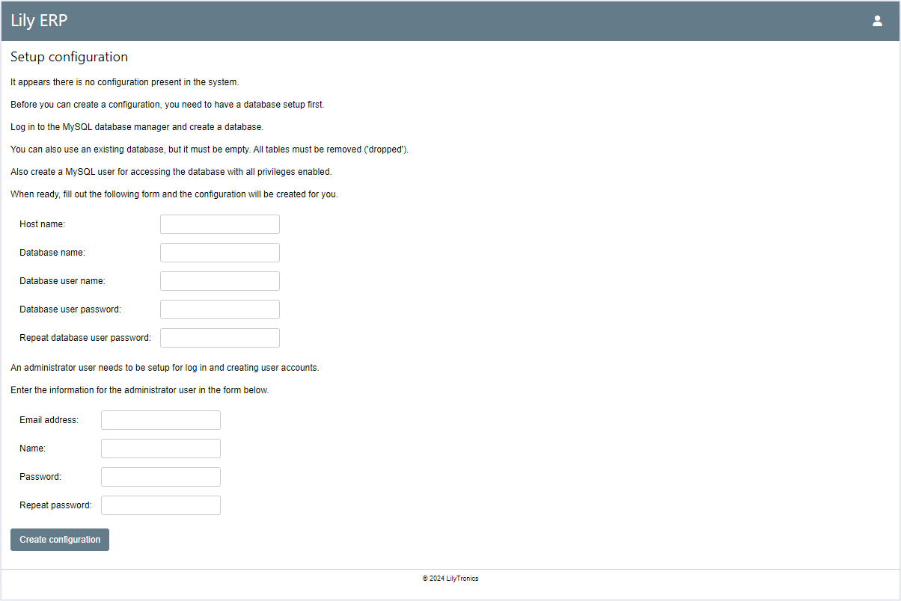

Setup and configuration
The setup and configuration is pretty straightforward.
Setup the web page
The web page is setup by an configuration file. This file is located in application/config.php.
Be carefull when modifying this file, it can break the web pages.
The contens of the file is shown below:
1<?php
2
3date_default_timezone_set("Europe/Amsterdam");
4
5// Define your domain name here to make SSL work properly
6define("DOMAIN", "lilytronics");
7
8// Config file must be outside the document root so it can never be reached by a web browser
9define("CONFIG_FILE", $_SERVER["DOCUMENT_ROOT"] . "/../lily_erp.ini");
On line 3 the time zone is set, you can change this to one of the values from this page: https://www.php.net/manual/en/timezones.php
For example the value for America, New York is: America/New_York.
The time zone determines the representation of the dates and times in the system.
On line 6 the domain name is defined. This is required to make sure the application is served from the correct server. This is part of the force SSL feature. If the domain is not setup properly, forcing SSL is not working.
On line 9 is the location to the configuration file defined.
The default value is $_SERVER["DOCUMENT_ROOT"] . "/../lily_erp.ini.
The $_SERVER["DOCUMENT_ROOT"] represents the folder where the web pages are hosted from.
The other part is the actual file name. In this case we go one folder up (/../) and the
name of the file is lily_erp.ini.
In this case the configuration file is one level outside of the web server folder.
This is important to make sure that this file cannot be accessed from the outside world using a HTTP request.
To change the location to an absolute path:
define("CONFIG_FILE", "C:/path/to/config_file.ini");
Because this file is automatically created by the application, the web server must have write access to this location.
The web site is setup properly. The next step is create a database.
Create a database
Usually a database can only be created from the server itself. You need to log in to the server and browse to http://localhost/phpmyadmin. This is the management application for MySQL. When logged in to the management application, create a new database. You can create as many as you want, but the one being used is set in the configuration file.
At the left you find a link called ‘New’. Click this link to create a new database.
Under ‘Create database’ you can type the name of the database. You can choose any name you like,
but we advice you to use some logic name. You also need to choose a collation.
This is done with the drop down box next to the name.
From the application point of view there is no specific collation required.
For more information about collations you can check the MySQL manual.
A generic collation that works in most cases is: utfmb4_general_ci.
It is adviced to use a _ci collation (case-insensitive).
This makes searching in records case insensitive and therefor easier.
Click the ‘Create’ button to create a database.
Once the database is created it should appear on the left in the list with databases. If not, refresh the page.
Next is to setup a user for the database. This is a user that the application uses to access the database. This is not a user that has access to the ERP application. Those users are setup later.
Select the database. At the top bar click ‘Privileges’. Click ‘Add user account’ below the table of users.
For the user name, use the text field and type a name for the user. For the hostname, use local. We do not want this user to have access from outside the server. For the password, use the text field or generate a password. Make sure to remember the credentials, because you will need them later.
Under ‘Database for user account’, make sure the checkbox before ‘Grant all privileges on database …’ is checked (’…’ is the name of your database).
Do not give this user any global privileges.
Click the ‘Go’ button to create the user.
Now all is setup correctly to continue to the final step.
Create the configuration
The configuration is created with the web interface. Open the Lily ERP web page. You should see the setup configuration page.
If you do not see this page, make sure your database is empty and delete any existing configuration files.
The first part are your database settings:
Host name: the name of the MySQL server, usually ‘localhost’.
Database name: the name of the database you just created.
Database user name: the user name of the user you created for the database.
Database user password: the password for that user.
Repeat database user password: the same password.
The second part is the user for logging in to the Lily ERP application. This will be an administrator user. This user will also be able to add more users in the application.
Email address: users are identified by their email address.
Name: the name used in various pages to identify the user in a more user friendly way.
Password: the password for this user.
Repeat password: the same password.
When all is filled out, click the ‘Create configuration’ button.
If all goes well, two things will happen:
The configuration file is created at the location of the define in the ‘config.php’ file.
A user is added to the database and is able to log in.
The page will reload and the log in page must show.
Configuration file
Below is an example of a configuration file.
1[sql]
2host=localhost
3database=lily_erp_test
4user=lily_test
5password="**********"
Note that the password is stored as plain text. Anybody with access to this file, can read the password. Make sure to take proper security measures to protect this information.
If you want to change to another database, simply edit this file and reload the web page. On every page load this file is read, so updates are available immediately.
It is also possible to run multiple instaces of the application. Just make a copy of the application and use a different configuration file for each instance.